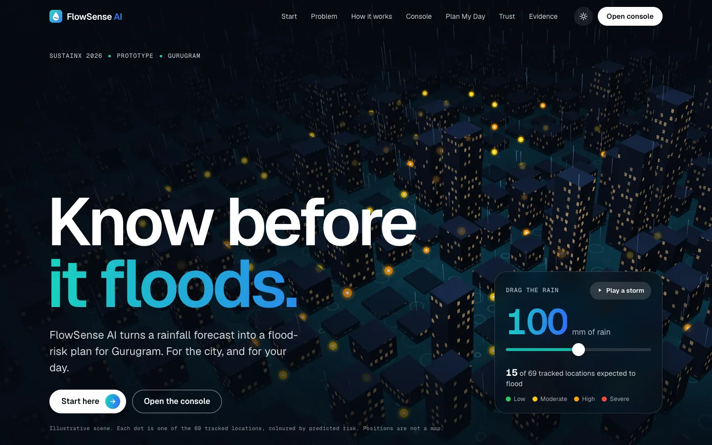

01 / 05 · SustainX 2026
FlowSense AI
Flood-risk intelligence, case competition
Turns a rainfall forecast into a flood-risk plan for Gurugram. A model trained on past flood events runs right in the browser, scores 69 tracked locations, plans pump and crew deployment, and drafts SMS alerts in English and Hindi. Built with Sameer Kumar.
- 69 locations
- 41% top-k precision vs 17% random
- Python
- Machine learning
- JavaScript
- WebGL
- PWA
